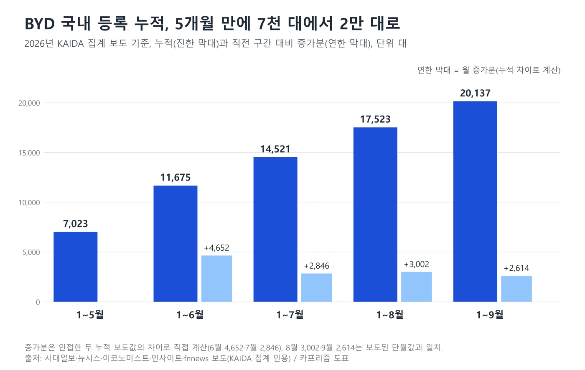
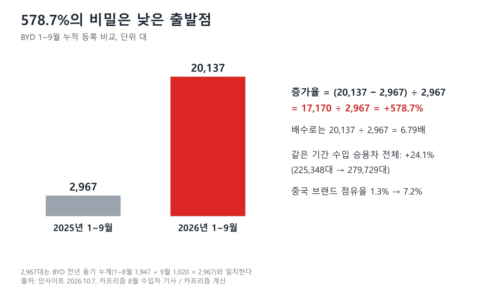
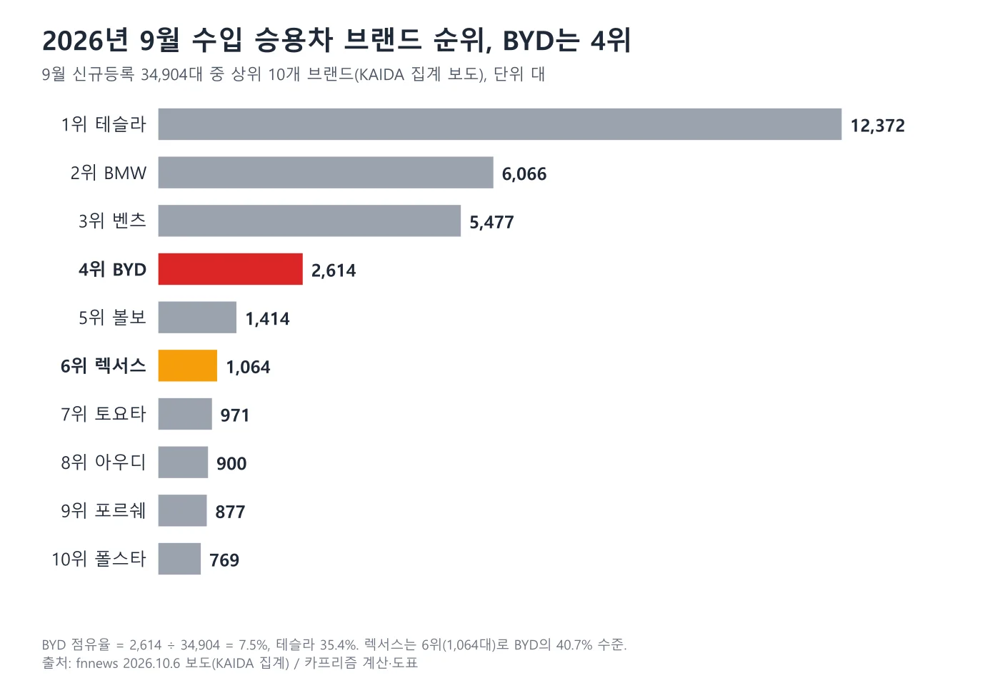
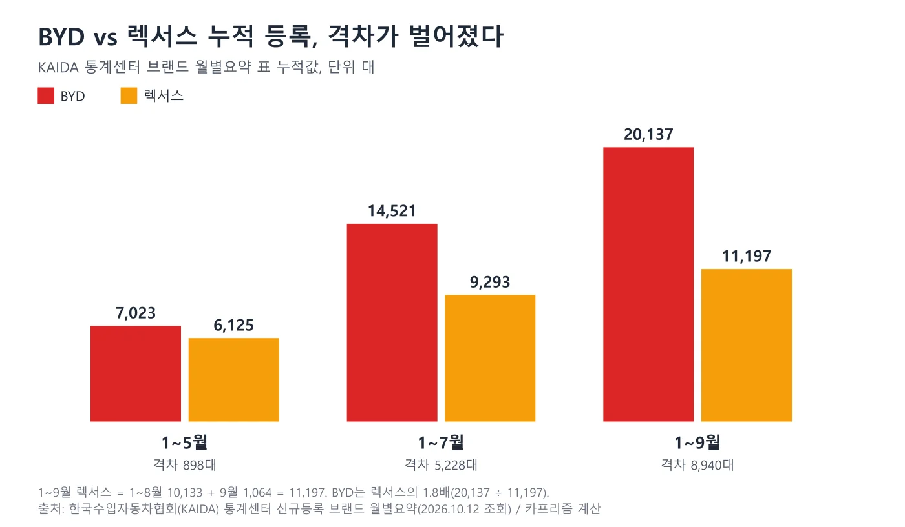
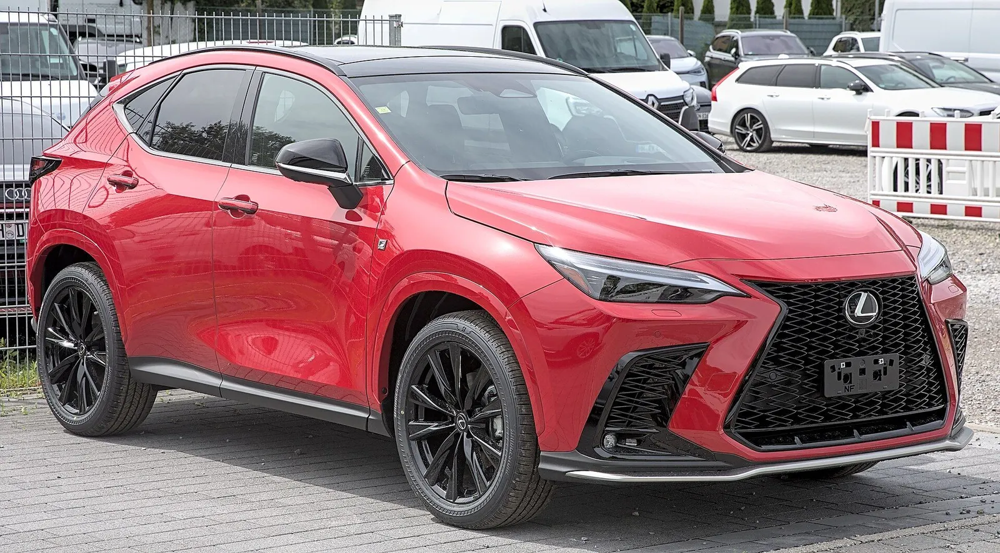
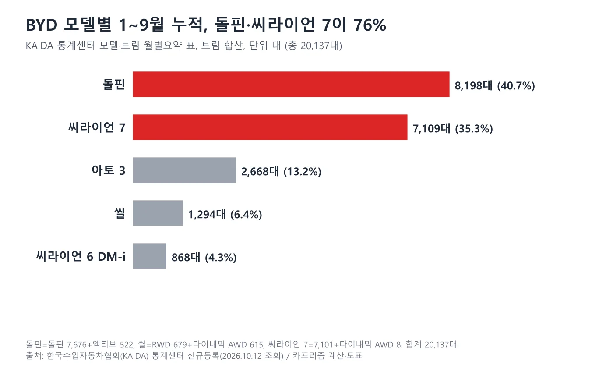
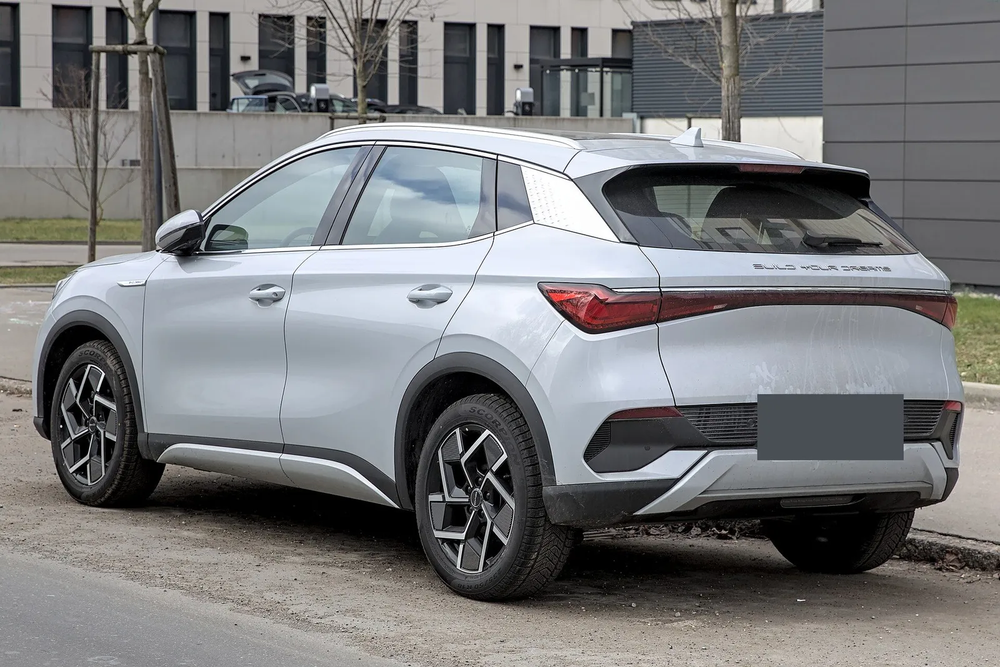
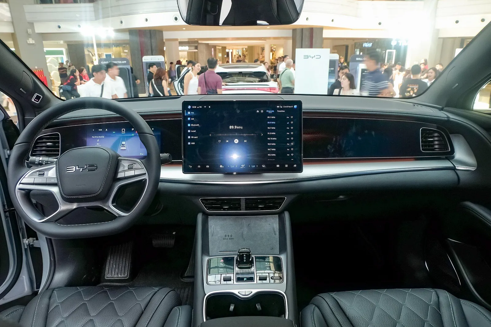

▲ BYD 씰(2023 IAA 모빌리티 전시차). 한국 판매 사양과 세부 사양이 같은지는 확인하지 않았다. 독일 번호판은 가림 처리했다 ⓒ Alexander-93, Wikimedia Commons (CC BY-SA 4.0)
"BYD 578% 급증." 이 글의 브랜드·모델 대수는 한국수입자동차협회(KAIDA) 통계센터의 신규등록 브랜드·모델 월별요약 표를 2026년 10월 12일 직접 조회해 확인했다(회원 전용 표는 열지 못했다). 전기차 비중처럼 그 표에 없는 항목과 일부 순위는 언론 보도(인사이트·파이낸셜뉴스·전자신문·뉴시스)를 인용하며 "보도됐다"로 표기했다. BYD의 2026년 1~9월 국내 신규등록은 누적 2만 137대로, 전년 동기 2,967대보다 578.7% 늘었다. 이 578.7%와 "2만 대 돌파"는 누적 기준이다. 9월 한 달만 보면 2,614대로 수입차 4위였고, 올해 월 최고였던 6월(4,652대)의 56% 수준이다. 이 글은 두 숫자를 구분하고, 578.7%를 직접 계산해 보고, 렉서스와의 누적 격차(약 8,940대)와 모델별 구성, 지금 BYD를 사면 가격과 보조금이 어떻게 되는지를 정리했다.
한 달 단위 흐름과 씨라이언 6 DM-i는 씨라이언 6 DM-i 100일 기사, 8월 수입차 시장은 8월 수입차 시장 기사, 3열 PHEV는 씨라이언 08 기사에서 다뤘다. 이 글은 9월 월간 결과, 누적 수치의 해석, 렉서스와의 비교, 지금의 가격·보조금에 집중한다.
1. 보도된 숫자 한눈에 — 누적과 단월을 섞지 않기
이번 BYD 기사 제목에는 "578%", "2만 대", "4위"가 한꺼번에 나온다. 그런데 이 세 숫자는 기준이 서로 다르다. 578%와 2만 대는 1~9월 누적이고, 4위는 9월 한 달 순위다. 누적 순위는 KAIDA 표 기준 테슬라 8만 9,148대(점유율 31.87%), BMW 5만 7,929대(20.71%), 벤츠 4만 3,249대(15.46%) 순이고, BYD가 2만 137대로 4위, 렉서스가 1만 1,197대로 5위다. 같은 이름으로 오해하기 쉬운 숫자를 표로 나눠 놓았다.
| 구분 | 2026년 | 2025년 | 증감 | 기준 |
|---|---|---|---|---|
| 1~9월 누적 | 20,137 | 2,967 | +578.7% | 누적 |
| 9월 단월 | 2,614 | 1,020 | +156.3% | 단월 |
| 8월 단월 | 3,002 | 369 | +713.6% | 단월 |
| 9월 vs 8월 | 2,614 | (3,002) | -12.9% | 전월 대비 |
| 9월 vs 6월 정점 | 2,614 | (4,652) | -43.8% | 카프리즘 계산 |
| 수입차 내 점유율 | 7.2%(누적)·7.5%(9월) | 1.3%(누적) | - | 카프리즘 계산 |
2025년 수치는 KAIDA 표의 전년 동기값(1~9월 2,967대, 9월 1,020대)이고, 8월 369대와 1~8월 1,947대는 8월 조회에서 확인한 값이다. 1,947대에 9월 1,020대를 더하면 2,967대가 되어 서로 맞는다. 월별 등록은 1월 1,347대, 2월 957대, 3월 1,664대, 4월 2,023대, 5월 1,032대, 6월 4,652대, 7월 2,846대, 8월 3,002대, 9월 2,614대이며 합하면 2만 137대다. 점유율은 20,137÷279,729=7.2%, 2,614÷34,904=7.5%로 직접 계산했다.

▲ BYD 국내 등록 누적과 월 증가분. 6월 4,652대를 정점으로 7월 2,846대, 8월 3,002대, 9월 2,614대로 월 증가분이 줄었다. 월 증가분은 누적값의 차이로 계산했다 ⓒ 카프리즘 제작 도표
2. 578.7%는 어떻게 나왔나 — 기저효과 계산
KAIDA 표의 2만 137대와 2,967대로 직접 계산하면 (20,137−2,967)÷2,967=17,170÷2,967=5.787이다. 즉 +578.7%이고 배수로는 6.79배다. 같은 기간 수입 승용차 전체는 22만 5,348대에서 27만 9,729대로 24.1% 늘었다. 두 증가율의 차이가 큰 이유는 BYD의 출발점이 낮았기 때문이다. BYD는 2025년 1월 한국에 진출했고, 전년 1~9월 누적이 2,967대에 그쳐 수입차 전체 점유율이 1.3%였다. 점유율 1.3%에서 7.2%로 올라간 것이 578.7%의 정체다.
이 점 때문에 578.7%라는 숫자는 "BYD가 지금도 매달 6배씩 늘고 있다"는 뜻이 아니다. 단월 증가율은 9월 +156.3%, 8월 +713.6%로 달 별로 크게 다르고, 전년 비교 기준이 낮을수록 높게 나온다. 앞으로 증가율은 기저가 올라가는 만큼 빠르게 낮아질 수밖에 없다. 실제로 월 등록 대수는 6월 4,652대에서 9월 2,614대로 줄었다. 증가율보다 월별 절대 대수와 점유율을 같이 봐야 한다.
| 항목 | 계산식 | 결과 |
|---|---|---|
| BYD 누적 증가율 | (20,137−2,967)÷2,967 | +578.7% |
| BYD 누적 배수 | 20,137÷2,967 | 6.79배 |
| BYD 9월 증가율 | (2,614−1,020)÷1,020 | +156.3% |
| 수입차 전체 누적 증가율 | (279,729−225,348)÷225,348 | +24.1% |
| BYD 누적 점유율 | 20,137÷279,729 | 7.2% |
| 중국 브랜드 중 BYD 비중 | 20,137÷20,186 | 약 99.8% |
마지막 줄은 중국 브랜드(KAIDA 표의 BYD 2만 137대와 지커 49대를 합한 중국 브랜드 누적 2만 186대, +580.4%)를 BYD가 거의 다 차지한다는 뜻이다. 9월 단월도 BYD 2,614대가 중국차 2,663대(BYD+지커 49대, +161.1%, 점유율 7.6%)의 약 98%다. 중국차 증가는 사실상 BYD 한 브랜드의 증가로 읽어야 한다.

▲ BYD 1~9월 누적 등록 비교와 578.7% 계산식. 전년 동기 2,967대가 낮은 출발점이다 ⓒ 카프리즘 제작 도표
3. 9월 단월 — 테슬라 1위, BYD 4위, 렉서스 6위
9월 수입 승용차 신규등록은 KAIDA 표 기준 3만 4,904대다. 테슬라가 1만 2,372대로 1위(점유율 35.4%), BMW 6,066대, 벤츠 5,477대, BYD 2,614대가 이었다. BYD 뒤로는 볼보 1,414대, 렉서스 1,064대, 토요타 971대, 아우디 900대, 포르쉐 877대, 폴스타 769대 순이다. 모델 기준으로는 테슬라 모델 Y L이 8,690대, 모델 Y 프리미엄이 2,467대, 벤츠 E 200이 2,133대로 보도됐다(파이낸셜뉴스). 일부 매체 기사에는 렉서스가 "164대"로 적혀 있으나 KAIDA 표의 렉서스 9월 등록은 1,064대다. 누적 대수도 일부 매체에서 27만 9,279대로 적혀 있으나 KAIDA 표는 27만 9,729대(전년 22만 5,348대 대비 +24.1%)다.
| 순위 | 브랜드 | 9월 등록 | 점유율(계산) |
|---|---|---|---|
| 1 | 테슬라 | 12,372 | 35.4% |
| 2 | BMW | 6,066 | 17.4% |
| 3 | 벤츠 | 5,477 | 15.7% |
| 4 | BYD | 2,614 | 7.5% |
| 5 | 볼보 | 1,414 | 4.1% |
| 6 | 렉서스 | 1,064 | 3.0% |
| 7 | 토요타 | 971 | 2.8% |
| 8 | 아우디 | 900 | 2.6% |
| 9 | 포르쉐 | 877 | 2.5% |
| 10 | 폴스타 | 769 | 2.2% |

▲ 2026년 9월 수입 승용차 브랜드 상위 10개. BYD 4위와 렉서스 6위를 강조했다 ⓒ 카프리즘 제작 도표
4위 BYD와 3위 벤츠의 거리는 2,863대, 5위 볼보와는 1,200대 차이다. 4위 자리는 위쪽보다 아래쪽과의 격차가 더 크다. 이 순위는 보조금이 끊긴 7월 이후에도 BYD가 4위를 유지하고 있다는 뜻이지만, 월 등록 대수 자체는 6월 정점보다 낮다. 전체 시장에서 BMW와 벤츠 5시리즈·E클래스의 대결은 별도 기사 주제이므로 이 글에서는 같은 9월 브랜드 수치만 인용한다.
4. "렉서스를 제쳤다"는 어디까지 말할 수 있나
BYD가 렉서스를 앞섰다는 말은 이제 KAIDA 표로 직접 확인된다. 월별 조회를 이어 보면 1~5월 누적은 BYD 7,023대, 렉서스 6,125대로 BYD가 898대 앞섰고, 1~7월은 1만 4,521대 대 9,293대(5,228대 차), 1~8월은 1만 7,523대 대 1만 133대(7,390대 차)였다. 이 값들은 시대일보·뉴시스 보도와 같다. 8월 15일 뉴시스 보도가 "올해 누적"이라고만 적은 렉서스 9,293대는 1~7월 누적이 맞다.
1~9월에는 BYD 2만 137대, 렉서스 1만 1,197대로 격차가 8,940대, 비율로 1.8배다. 렉서스는 1~8월 1만 133대에 9월 1,064대를 더한 값이고, 이 합은 KAIDA 표의 렉서스 합계와 일치한다. 전자신문 보도는 누적 순위를 이미지로만 제시해 본문에서 렉서스 값을 확인할 수 없었지만, KAIDA 표로는 누적 순위가 테슬라·BMW·벤츠·BYD·렉서스(5위)·볼보(1만 612대, 6위) 순이다. 렉서스는 전년 같은 기간(1만 1,629대)보다 3.7% 줄었다.
월별로 보면 BYD는 3월(1,664대 대 1,178대)부터 렉서스를 앞섰고, 1월(1,347대 대 1,464대)과 2월(957대 대 1,113대)은 렉서스가 더 많았다. 4월은 2,023대 대 1,079대로 BYD가 앞섰지만 5월은 1,032대 대 1,291대로 다시 렉서스가 앞섰다. 즉 "BYD가 매달 렉서스를 앞섰다"는 말은 틀리고, 6월(4,652대 대 1,694대) 이후 4개월 연속으로 앞섰다고 해야 정확하다. 누적 격차의 상당 부분은 6월 한 달(2,958대 차)이 만들었다.
| 시점 | BYD | 렉서스 | 격차 | 비고 |
|---|---|---|---|---|
| 1~5월 | 7,023 | 6,125 | 898 | 시대일보 보도와 일치 |
| 1~7월 | 14,521 | 9,293 | 5,228 | 뉴시스 8.15 보도와 일치 |
| 1~8월 | 17,523 | 10,133 | 7,390 | 월별요약 표 |
| 1~9월 | 20,137 | 11,197 | 8,940 | 월별요약 표(렉서스 전년 동기 11,629) |

▲ BYD와 렉서스 누적 등록 비교. 1~9월 격차는 8,940대로 1~7월(5,228대)보다 벌어졌다 ⓒ 카프리즘 제작 도표

▲ 렉서스 NX 전측면. 이 글의 렉서스 수치는 브랜드 합계이며 NX 판매량이 아니다. 사진은 독일에서 촬영됐고 번호판은 비워진 상태다 ⓒ Alexander Migl, Wikimedia Commons (CC BY-SA 4.0)
5. 어느 차가 팔렸나 — 돌핀과 씨라이언 7이 76%
KAIDA 모델·트림 월별요약 표를 트림 단위로 합산하면 BYD 모델 구성이 모두 나온다. 돌핀은 9월 1,221대(돌핀 1,153대+액티브 68대)에 누적 8,198대(7,676대+522대), 씨라이언 7은 9월 753대(745대+AWD 8대)에 누적 7,109대(7,101대+8대)다. 인사이트는 이 둘을 수입차 모델 누적 5위·6위로 전했다(모델 순위는 회원 전용 표라 직접 확인하지 못했다). 두 모델을 합하면 누적 1만 5,307대로 BYD 누적의 약 76%다. 나머지 4,830대는 아토 3 2,668대, 씰 1,294대(RWD 679대+다이내믹 AWD 615대), 씨라이언 6 DM-i 868대로 구성된다.
| 모델 | 9월 | 8월 | 1~9월 누적 | BYD 누적 대비 |
|---|---|---|---|---|
| 돌핀(액티브 포함) | 1,221 | 1,202 | 8,198 | 40.7% |
| 씨라이언 7(AWD 포함) | 753 | 819 | 7,109 | 35.3% |
| 아토 3 | 227 | 327 | 2,668 | 13.2% |
| 씰(AWD 포함) | 102 | 154 | 1,294 | 6.4% |
| 씨라이언 6 DM-i | 311 | 500 | 868 | 4.3% |
| BYD 합계 | 2,614 | 3,002 | 20,137 | 100% |
9월 BYD가 8월보다 388대 줄어든 것(3,002대에서 2,614대)은 씨라이언 6 DM-i(500대에서 311대, -189대), 아토 3(327대에서 227대, -100대), 씨라이언 7(819대에서 753대, -66대), 씰(154대에서 102대, -52대)이 줄고 돌핀만 늘어난(1,202대에서 1,221대, +19대) 결과다. 돌핀의 4위는 수입차 모델 순위(인사이트 보도)이고, BYD의 4위는 브랜드 순위로 서로 다른 순위다.

▲ BYD 모델별 1~9월 누적 등록. 돌핀과 씨라이언 7이 전체의 76%를 차지한다 ⓒ 카프리즘 제작 도표

▲ BYD 돌핀(유럽 판매형, 독일 촬영) 후측면. 한국 판매 사양과 세부 사양이 같은지는 확인하지 않았다. 독일 번호판은 가림 처리했다 ⓒ Alexander-93, Wikimedia Commons (CC BY-SA 4.0)

▲ BYD 씨라이언 07 EV(해외명, 국내 명칭 씨라이언 7) 후측면. 독일 번호판은 가림 처리했다. 한국 판매 사양과 같은지는 확인하지 않았다 ⓒ Alexander Migl, Wikimedia Commons (CC BY-SA 4.0)
6. 지금 BYD를 사면 — 가격과 보조금 (보도 기준)
BYD코리아 공식 누리집은 이번 작업에서 여러 번 접속을 시도했으나 열리지 않아 가격표를 직접 확인하지 못했다. 다만 KAIDA 표의 가격 열(수입사 신고 가격)은 돌핀 2,450만 원·액티브 2,920만 원, 아토 3 3,150만 원, 씰 3,990만 원·씰 다이내믹 AWD 4,690만 원, 씨라이언 7 4,490만 원·AWD 5,390만 원, 씨라이언 6 DM-i 3,750만 원으로 아래 보도 가격과 일치한다(플러스 트림은 이 표에 등록 실적이 없어 확인되지 않았다). 가격이 바뀌었을 수 있으므로 계약 전 공식 전시장·누리집 가격표를 반드시 확인해야 한다. 한국 판매 모델의 보도 가격은 다음과 같다.
| 모델 | 가격 | 구분 | 기준 보도 |
|---|---|---|---|
| 돌핀 | 2,450 / 액티브 2,920 | 전기 해치백, 복합 354km | 2월 출시 보도(ZDNet 등) |
| 씰 RWD | 3,990 / 플러스 4,190 | 전기 세단, 최대 449km | 2월 출시 보도(모터매거진) |
| 씨라이언 7 | 4,490 / 플러스 4,690 | 전기 SUV, 상온 398km | 카프리즘 기존 기사 |
| 씰 다이내믹 AWD | 4,690 | 전기 세단, AWD | KAIDA 표 가격 열 |
| 씨라이언 7 다이내믹 AWD | 5,390 | 전기 SUV, AWD | KAIDA 표 가격 열(9월 8대) |
| 씨라이언 6 DM-i | 3,750 | PHEV, EV 주행 70km | 6월 공개 보도 |
| 아토 3 | 3,490 (플러스 단일) | 전기 SUV | BYD코리아 공식 누리집(2026.10.14 확인). 이전 표기: KAIDA 가격 열 3,150만 원(2025년 출시 기본 트림 신고가) |
보조금은 변수가 하나 있다. BYD 전기 승용은 7월 1일 보급사업 평가에서 탈락해 국고보조금 대상에서 빠졌다고 보도됐다. BYD코리아는 '친환경 무공해 차량 고객 지원 프로그램'으로 기존 국고보조금과 같은 금액(돌핀 109만, 씰 RWD 169만, 씰 AWD 151만, 씨라이언 7 152만, 아토 3 126만 원)을 자체 지원한다고 보도됐고, 지자체 보조금분의 공백은 남는다. 지금의 실구매가는 거주지 지자체 보조금과 프로그램 종료 시점에 따라 달라지며, 이 글에서는 ev.or.kr에서 모델별 지자체 보조금을 직접 조회하지 못했으므로 실구매가는 계산하지 않았다. 자세한 계산은 BYD 실구매가 기사와 BYD 2026 라인업 기사에 있다. 지역별 보조금은 무공해차 통합누리집에서 확인 가능하다. 무공해차 통합누리집 바로가기
📍 보조금 제외인데 왜 팔리나
보조금이 빠진 7월 이후에도 BYD는 월 2,600~3,000대를 유지했다. 6월(4,652대)이 보조금 제외 직전에 몰린 수요 때문인지는 확인하지 못했다. 이 글은 "자체 지원금이 가격 충격을 완화했다"는 보도까지만 전한다.
▲ BYD 씰(2023 IAA 모빌리티 전시차). 한국 판매 사양과 세부 사양이 같은지는 확인하지 않았다. 독일 번호판은 가림 처리했다 ⓒ Alexander-93, Wikimedia Commons (CC BY-SA 4.0)
7. 수입차 시장 전체 지도 — 전기차 52.1%, 중국차 7.2%
9월 수입 승용차 중 전기차는 1만 8,181대(+41%)로 52.1%였고, 1~9월 전기차는 13만 2,582대(+99.8%)로 보도됐다. 중국 브랜드는 누적 2만 186대(+580.4%)로 점유율이 1.3%에서 7.2%로, 9월은 2,663대로 3.1%에서 7.6%로 올랐다. 테슬라는 8개월 연속 1위로 보도됐다(전자신문). BYD는 이 흐름에서 중국차를 대표하지만, 월 등록은 6월 정점 이후 줄었다는 점이 숫자로는 가장 눈에 띈다.
| 항목 | 9월 | 1~9월 |
|---|---|---|
| 수입 승용차 신규등록 | 34,904대 | 279,729대(+24.1%, 전년 225,348대) |
| 전기차 등록 | 18,181대(+41%, 52.1%) | 132,582대(+99.8%) |
| 중국 브랜드 | 2,663대(+161.1%, 7.6%) | 20,186대(+580.4%, 7.2%) |
| 테슬라 | 12,372대(1위) | 89,148대(31.87%) |
| BMW | 6,066대 | 57,929대(20.71%) |
| 벤츠 | 5,477대 | 43,249대(15.46%) |
BMW와 벤츠는 9월 수입차 판매에서 2·3위 자리를 지켰다. 두 브랜드의 대표 모델 5시리즈와 E클래스의 9월 격차는 별도 기사에서 다루며, 이 글과 같은 9월 브랜드 수치(BMW 6,066대·벤츠 5,477대)를 쓴다.

▲ BYD 아토 3 후측면(독일 촬영). 한국 판매 사양과 세부 사양이 같은지는 확인하지 않았다. 독일 번호판은 가림 처리했다 ⓒ Alexander Migl, Wikimedia Commons (CC BY-SA 4.0)
8. 구매를 고민하는 사람이 볼 것
- 누적이 아니라 월 흐름: 월 등록은 6월 4,652대, 7월 2,846대, 8월 3,002대, 9월 2,614대다. 수요가 줄었다는 뜻일 수도, 보조금 제외 후 안정화일 수도 있으며 보도만으로는 구분할 수 없다.
- 자체 지원금의 지속성: 프로그램 종료 시점을 확인하지 못했다. 계약서에 지원 조건이 명시되는지 확인해야 한다.
- 지자체 보조금: 국고보조금은 대체됐지만 지자체 보조금분은 소비자 부담이라는 계산이 있다. 거주지 공고를 확인해야 한다.
- 서비스·안전: 서비스센터와 리콜 이력은 별개다. 씨라이언 7은 안전벨트 경고 리콜 기사를 참고한다.
- 잔존가치: 등록 대수가 늘수록 중고 시세가 쌓이지만, 아직 3년 이상 거래 데이터가 없다. 이 글은 시세를 확인하지 못했다.

▲ BYD 씨라이언 7 퍼포먼스 AWD 실내. 해외 전시 현장에서 촬영된 사진이며 한국 판매 사양과 같은지는 확인하지 않았다 ⓒ Ethan Llamas, Wikimedia Commons (CC BY-SA 4.0)
9. 이 글이 확인하지 못한 것
- KAIDA 회원 전용 표: 모델(그룹) 순위 등 로그인이 필요한 표는 열지 못했고, 돌핀·씨라이언 7의 모델 순위(4위·5위·6위 등)는 인사이트 보도를 따랐다
- 전기차 비중(52.1%)과 연료별 통계: KAIDA 연료별 표를 직접 열어 확인하지 않고 언론 보도를 인용
- BYD코리아 공식 가격표와 ev.or.kr 지자체 보조금 조회: 공식 누리집이 열리지 않아 확인하지 못했고(KAIDA 가격 열로 일부 대체), 실구매가는 계산하지 않음
- 자체 지원 프로그램 종료 시점, 1~5월 월별 등록(1~3월)
- 일부 매체 표기 불일치: 렉서스 9월 164대, 누적 27만 9,279대는 KAIDA 표(1,064대, 27만 9,729대)와 달라 쓰지 않음
10. 요약
KAIDA 통계센터 표 기준 BYD의 1~9월 누적 등록은 2만 137대로 전년 동기 2,967대보다 578.7% 늘었다. 이 증가율은 낮은 출발점(점유율 1.3%) 덕분이고 누적 기준이며, 9월 단월은 2,614대(+156.3%)로 수입차 4위, 6월 정점(4,652대)보다 43.8% 낮다.
BYD는 9월 수입차 시장 점유율 7.5%로 테슬라(1만 2,372대)·BMW·벤츠에 이은 4위이고 렉서스는 6위(1,064대)다. 렉서스의 1~9월 누적은 1만 1,197대로 BYD보다 8,940대(1.8배) 적고, 월별로는 6월 이후 4개월 연속 BYD가 앞섰다.
BYD 전기 승용은 7월부터 국고보조금 대상에서 빠졌고 같은 금액을 회사가 자체 지원한다고 보도됐다. 공식 가격표와 ev.or.kr 지자체 보조금 조회는 직접 확인하지 못했으므로 구매 전에는 공식 자료로 다시 확인해야 한다.